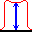

Radiology Tool Bar¶
The Radiology tool bar provides methods to analyse DICOM images from diagnostic radiology modalities such as CT, Fluoroscopy and X-ray. The analysis is done via Pylinac and results are returned as a PDF report. No checking is done by the tests to see if the images are suitable. For trouble shooting please see the Pylinac documentation.
 Scale Image